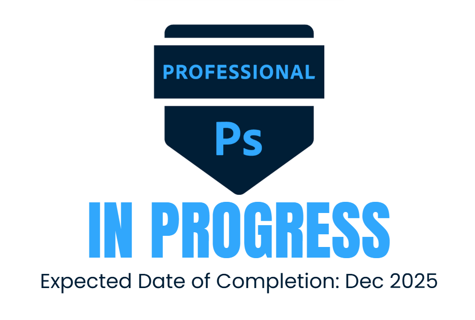
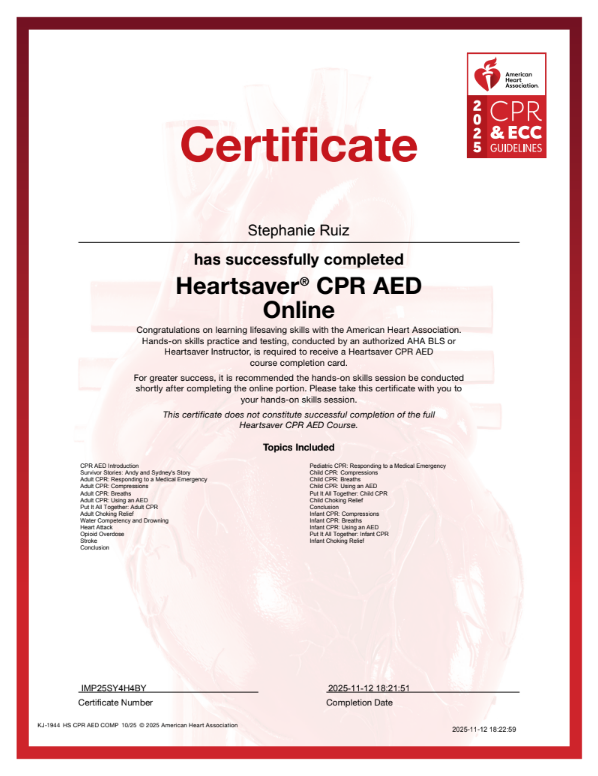
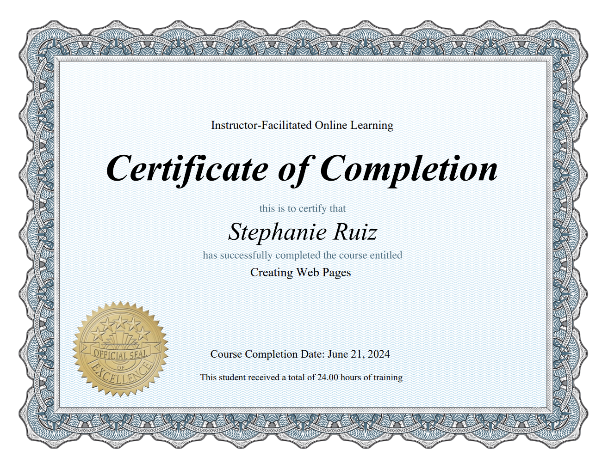
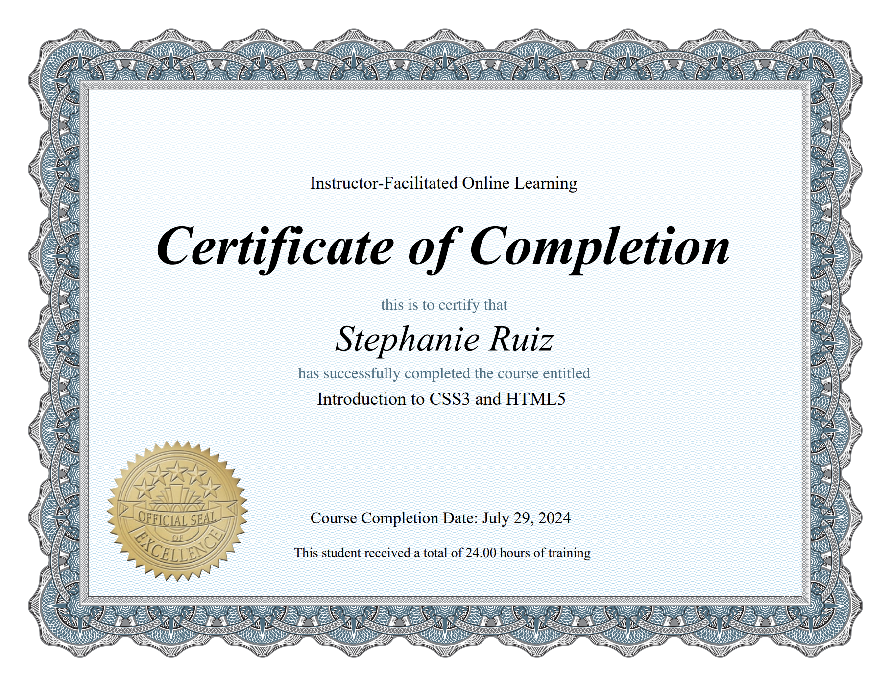
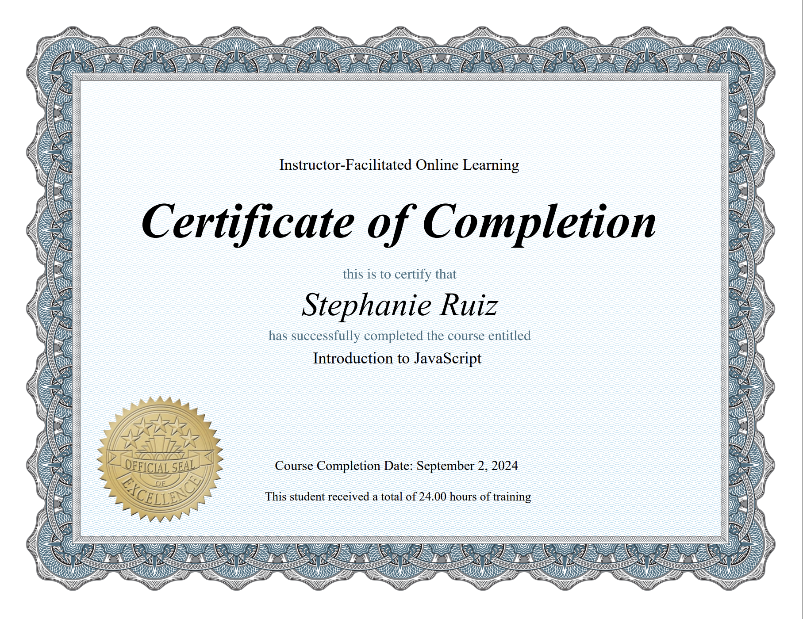

Personal Projects
Below are certificate courses I have worked on in the past and am now actively working on in the present. (Click to enlarge)





Reports & Documents
You can view some of my case studies and class reports below:
Activity Based Costing at Toyota
Amazon's Workplace Ethics: Case Study
An Ethical Analysis of the Wells Fargo Scandal
B-Corporations: An Analysis of King Arthur Baking Company
Choosing a Workplace: Values and Company Culture
The Ethical Implications of SHEIN's Labor Practices
Ethics and Surveillance